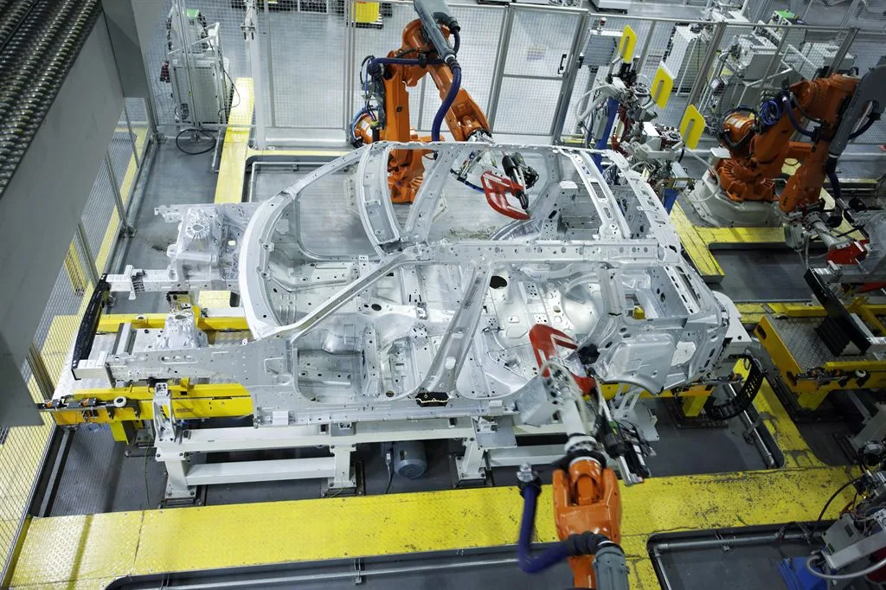
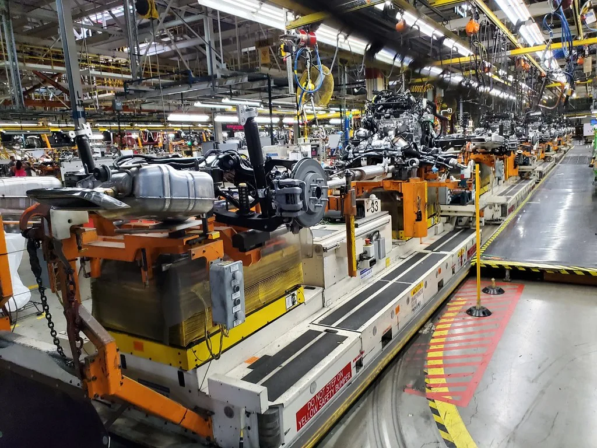

현대차 노사 2026 임금협상 잠정합의안 찬반투표…기본급 10만원 인상
현대자동차 노사가 지난주 마련한 2026년 임금협상 잠정합의안에 대한 조합원 찬반투표가 8월 31일 실시됐다. 전국금속노동조합 현대차지부는 이날 오전 6시부터 울산·전주·아산공장과 경기 화성 남양연구소 등 사업장에서 전체 조합원 약 3만9000명을 대상으로 투표를 진행했다. 전국 사업장의 투표함은 개표를 위해 울산공장 노조 사무실로 모이며, 가결 여부는 이날 밤늦게 판가름 날 전망이다. 노사는 앞서 8월 25일 교섭에서 잠정합의안에 서명했다.
잠정합의안에는 월 기본급 10만원 인상, 성과금 400%에 일시금 1270만원 지급, 회사 주식 15주 지급, 복지 포인트 50만원, 여름 휴가비 20만원 인상 등이 담겼다. 지난해 실적을 반영한 성과 보상과 기본급 인상을 함께 묶은 것으로, 노사는 물가 상승 국면에서 실질임금을 지키는 데 무게를 뒀다고 설명했다.

합의안에는 고용과 관련한 조항도 포함됐다. 노사는 2028년까지 기술직(생산직) 신규 인력 500명을 채용하기로 하고, 2027년 하반기 200명, 2028년 300명을 나눠 뽑기로 했다. 정년을 앞둔 고령 인력의 은퇴가 이어지고 전동화 전환으로 공정이 바뀌는 가운데, 생산 현장의 숙련 공백을 메우기 위한 조치다. 신규 채용은 노조가 이번 교섭에서 임금 인상 못지않게 강하게 요구해 온 사안으로, 미래차 시대에도 국내 생산과 고용을 유지하겠다는 상징적 의미가 있다는 평가가 나온다.
노사는 임금·근로조건을 넘어 미래 제조 기술 도입에도 공감대를 이뤘다. 이른바 '피지컬 인공지능'과 로보틱스 등 신기술을 생산 현장에 적용하는 것이 회사의 미래 경쟁력에 필요하다는 데 뜻을 모은 것이다. 다만 현장 조합원 사이에서는 자동화가 확대되면 일자리가 줄어드는 것 아니냐는 우려가 여전하다. 노사가 신기술의 구체적인 적용 범위와 속도를 어떻게 조율하느냐에 따라 세부 이행 과정에서 진통이 이어질 수 있다.
이번 잠정합의는 파업의 진통 끝에 나왔다. 현대차 노사는 봄철 상견례 이후 교섭에 난항을 겪었고, 노조는 여러 차례 부분파업에 나서며 사측을 압박했다. 파업으로 일부 차종의 출고가 지연되고 협력사 가동에도 영향이 미치자 양측 모두 부담이 커졌다. 노사는 상견례로부터 111일 만인 8월 말 잠정합의에 도달하면서 임금 교섭은 마무리 국면에 접어들었다. 다만 조합원 일부는 기본급 인상 폭과 성과금 규모가 기대에 못 미친다며 부결 가능성을 거론하고 있다.

현대차 교섭 결과는 완성차 업계 전반에 영향을 준다. 현대차가 '맏형' 격으로 임금 협상의 기준선을 제시하면 기아와 한국지엠, 르노코리아, KG모빌리티 등 나머지 업체의 협상에도 준거가 되기 때문이다. 특히 기아 노사는 현대차 결과를 지켜본 뒤 교섭 속도를 조절해 왔다. 부품 협력사와 울산 등 생산 거점의 지역 경제도 현대차 노사 협상 타결 여부를 주시하고 있다.
잠정합의안은 재적 조합원 과반이 투표에 참여하고, 투표자 중 과반이 찬성하면 최종 가결된다. 가결되면 현대차 노사는 여름을 넘긴 교섭을 일단락하게 되고, 부결되면 노사는 재교섭에 들어가야 한다. 추석 연휴를 앞두고 있어, 협상이 길어질 경우 생산 차질 우려가 다시 커질 수 있다.